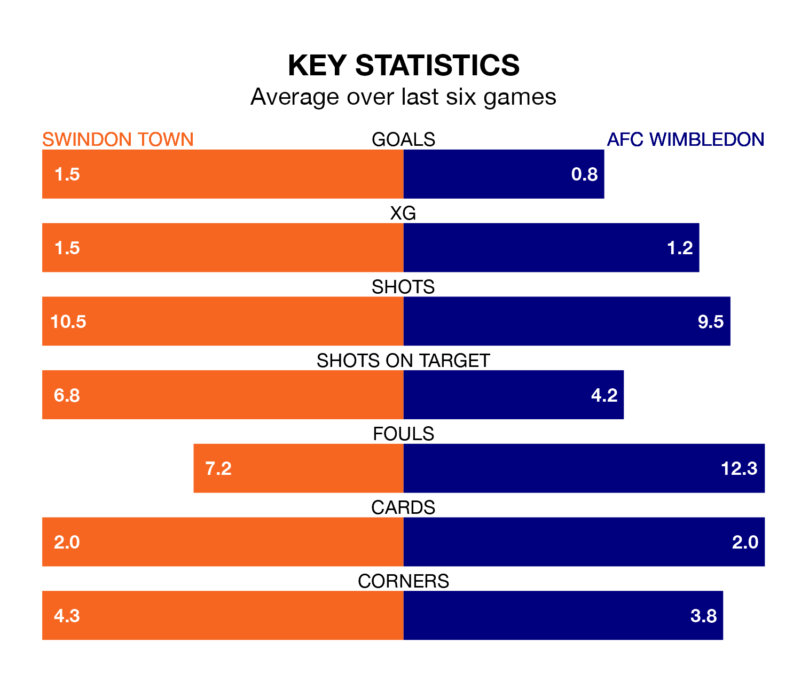

Swindon Town host AFC Wimbledon on Saturday at the County Ground in EFL League Two.
In their last league match, on April 6, Swindon beat Barrow 2-0 away, with goals from Paul Glatzel and Williams Kokolo.
Wimbledon also won, 1-0 at home against Salford City, with Omar Bugiel scoring their goals.
In Alex Bass, Wimbledon can rely on one of the league's safest pair of hands. He has kept 16 clean sheets in his 43 appearances this season, and no 'keeper has prevented the opposition scoring more often in EFL League Two.
In Swindon's net, Murphy Mahoney has four clean sheets in 23 games. He has conceded a goal every 57 minutes, 60% more often than the 92 minutes between goals for Bass.
With 70 goals in 42 games so far this season, Town are scoring more than average in the league with 1.7 goals per game. But they are conceding more than average too, letting in 74 goals at a rate of 1.8 per game.
The Dons, meanwhile, are below average scorers, with 1.3 goals per game, compared to a league average of 1.5. They have conceded 1.0 goal per game.
In the last 10 years, Swindon and Wimbledon have played each other on seven occasions. Swindon won one of them, Wimbledon three, and they drew three times.
On average, the Robins scored 0.9 goals and the Dons 1.4 in those matches.
Their last meeting was on December 9, when Wimbledon won 4-0 at home.
The Robins are 19th in the table after 42 games, of which they have won 13 and drawn 11, earning 50 points.
The visitors are 11 places ahead of the home side in eighth, with 16 wins and 14 draws putting them on 62 points.
Swindon are in disappointing form in EFL League Two, with two wins and four losses from their last six games.
With two wins and two draws over that period, Wimbledon's form is slightly better – they have taken eight points from 18, compared to Swindon's six.
Saturday's match will be refereed by Oliver Yates, who has taken charge of 15 EFL League Two games so far this season, issuing five red cards and booking 66 players. He has awarded five penalties.
The last Wimbledon game Yates refereed was the 2-0 win at home against Doncaster Rovers on November 11. He is yet to oversee a match featuring Swindon this season.
Updated: 10:01 (UTC), 12/04/24